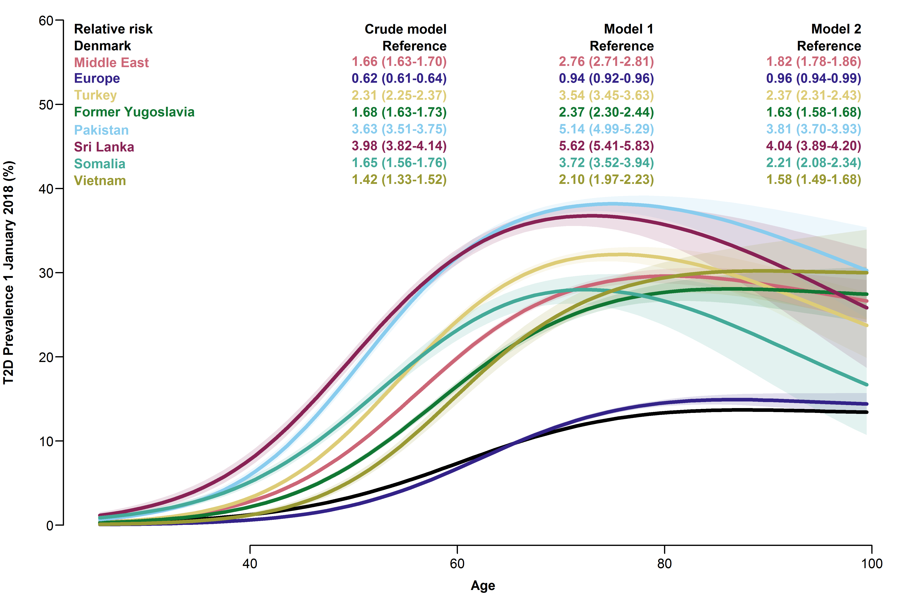
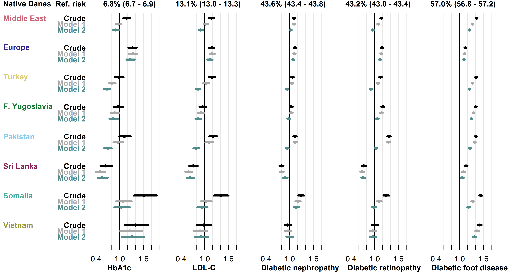
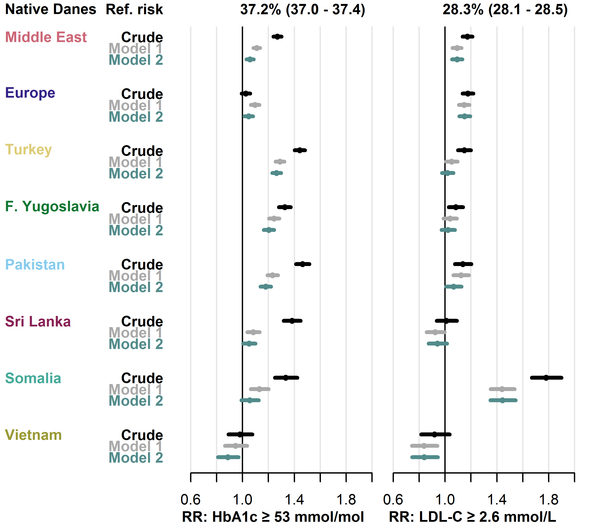
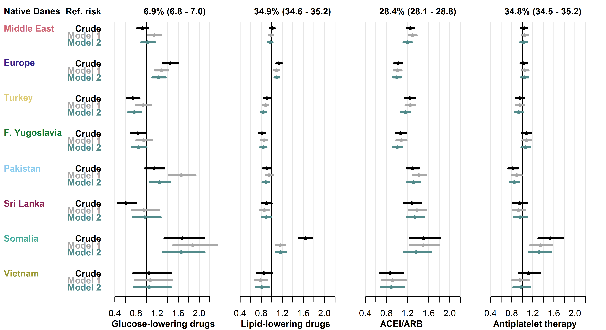
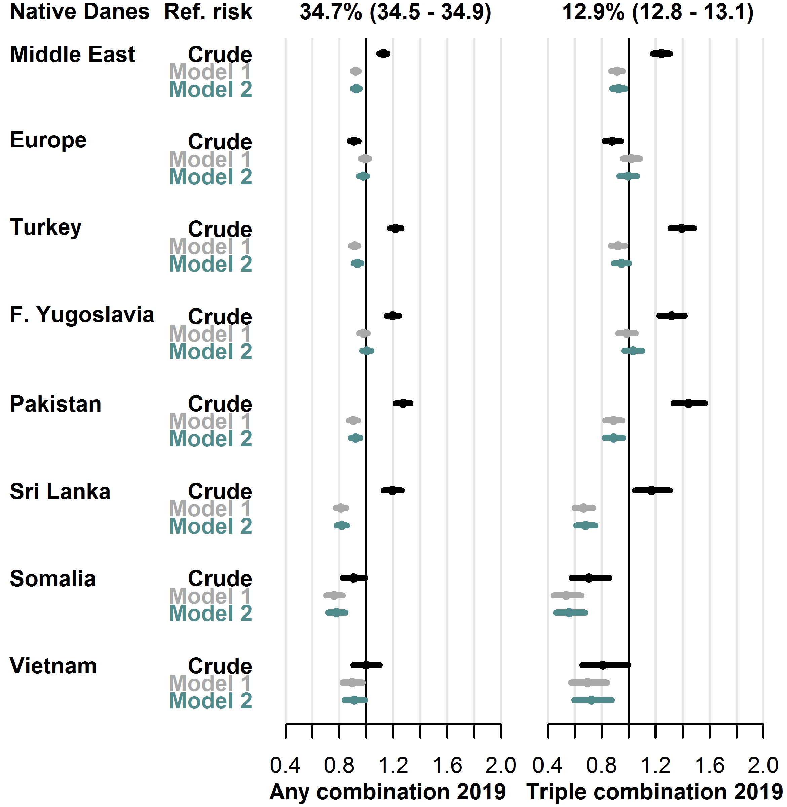
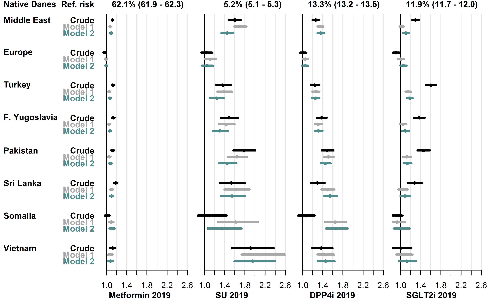
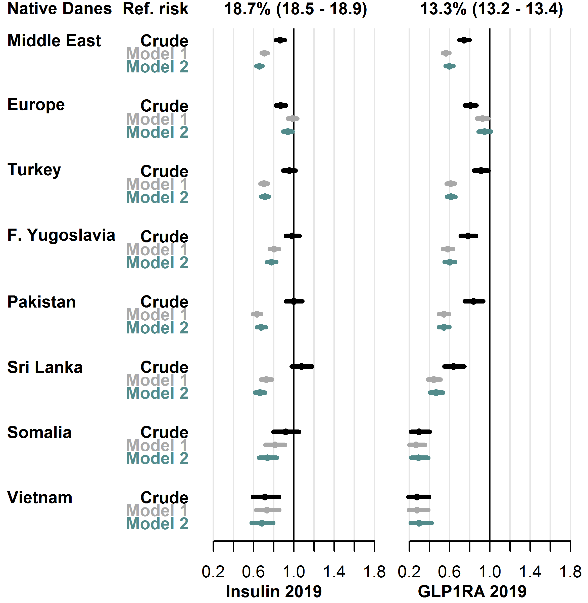

4 Results in summary
This chapter presents the nationwide register-based T2D cohort identified by the OSDC and details the flow of individuals through the algorithm. Next, the main results of each study associated with the dissertation are presented. Additional details are available in the respective papers and their supplementary material, attached in Appendix B.
4.1 Register-based type 2 diabetes population
4.1.1 Flow of individuals in the Open-Source Diabetes Classifier
This section shows the OSDC diabetes classification algorithm applied on the register data and details how it identifies individuals with T2D (i.e. the study populations in subsequent studies).
When applied to nationwide register data (described in Chapter 3) on all individuals aged 18 years and above, the OSDC identifies a nationwide cohort of individuals with prevalent diabetes at any point in time of 448,685 individuals, as shown in Figure 4.1. Of the four inclusion criteria, GLD purchase was most the common, being present in roughly 90% of diabetes cases, followed by records of elevated HbA1c levels in 75%, hospital diagnoses of diabetes in 70%, and diabetes-specific podiatrist services in 55% of cases. Censoring of potential GDM affected fewer individuals relative to censoring of potential PCOS and exclusion of cases with only a single inclusion event.
In this diabetes cohort, 34,079 were classified as T1D and 425,300 as T2D, of whom 24,026 and 276,081 were alive and residing in Denmark with prevalent T1D and T2D on 1 January 2019 after adjusting for insulin use in the previous year, as shown in Figure 4.2. Among individuals exclusively treated with insulin (left half of Figure 4.2), around 75% had at least one primary hospital diagnosis of T1D from a medical department. These constituted the vast majority of T1D cases, as the classification branch containing individuals with any non-insulin GLD purchase (right half of Figure 4.2) contributed only 2,748 (8%) of all T1D cases in the cohort. Correcting the cross-sectional classifier populations for recent insulin purchases prior to a particular index date had little impact (e.g. on 1 January 2019, only 413 (1.7%) of the T1D classifications in the cohort had not made a purchase of insulin in the previous year). The classification of T2D cases in the cohort was more homogeneous, as the vast majority (382,116 (90%) of 425,300 cases) were individuals with purchases of non-insulin GLD and no primary hospital diagnoses of T1D from a medical department (the rightmost path of Figure 4.2).
{kind=link}
Counts indicate the number of individuals with any records of each inclusion criteria, and with any censored inclusion events (thus, an individual may contribute to several counts, and individuals with censored events may have uncensored events recorded at other points in time).
{kind=link}
4.2 Study I
This study validated the OSDC and the RSCD, two predefined register-based classifiers of diabetes type, against self-reported diabetes type in a general survey population. Among 29,391 individuals aged 18-74 years, the prevalence of self-reported diabetes was 2,633 (9.0%); 410 (1.4%) reported T1D and 2,223 (7.6%) reported T2D.
In the classification of T1D and T2D, the sensitivity of the OSDC was 0.773 (95% CI [0.730; 0.813]) and 0.944 (95% CI [0.933; 0.953]), respectively. Compared to the RSCD, sensitivity of the OSDC was substantially higher in the classification of T1D (7% higher) and in the classification of T2D (4% higher). In the classification of T1D, the specificity was practically identical in the two algorithms at 0.999 (95% CI [0.999; 1.000]), while the specificity of the OSDC in the classification of T2D was 0.989 (95%CI [0.988; 0.990]), which was 0.3% lower than for the RSCD. This corresponded to a PPV of 0.875 (95% CI [0.861; 0.888]), which was 2.3% lower than for the RSCD. See Table 4.1 and Table 4.2 for details.
Table 4.1: Validation of register-based classification of type 1 diabetes
| OSDC | Survey: +T1D | Survey: -T1D | Total N |
|---|---|---|---|
| OSDC: +T1D | 317 | 19 | 336 |
| OSDC: -T1D | 93 | 28,962 | 29,055 |
| Total N | 410 | 28,981 | 29,391 |
| Sensitivity: | 0.773 (0.730, 0.813) | ||
| Specificity: | 0.999 (0.999, 1.000) | ||
| PPV: | 0.943 (0.913, 0.966) | ||
| NPV: | 0.997 (0.996, 0.997) |
| RSCD | Survey: +T1D | Survey: -T1D | Total N |
|---|---|---|---|
| RSCD: +T1D | 287 | 17 | 304 |
| RSCD: -T1D | 123 | 28,964 | 29,087 |
| Total N | 410 | 28,981 | 29,391 |
| Sensitivity: | 0.700 (0.653, 0.744) | ||
| Specificity: | 0.999 (0.999, 1.000) | ||
| PPV: | 0.944 (0.912, 0.967) | ||
| NPV: | 0.996 (0.995, 0.996) |
Notes
- “-T1D” designates individuals with type 2 diabetes or no diabetes according to the source (classifier or survey).
- Abbreviations: T1D: Type 1 diabetes. OSDC: Open-Source Diabetes Classifier. RSCD: Register for Selected Chronic Diseases. PPV: Positive predictive value. NPV: Negative predictive value.
Table 4.2: Validation of register-based classification of type 2 diabetes
| OSDC | Survey: +T2D | Survey: -T2D | Total N |
|---|---|---|---|
| OSDC: +T2D | 2,098 | 299 | 2,397 |
| OSDC: -T2D | 125 | 26,869 | 26,994 |
| Total N | 2,223 | 27,168 | 29,391 |
| Sensitivity: | 0.944 (0.933, 0.953) | ||
| Specificity: | 0.989 (0.988, 0.990) | ||
| PPV: | 0.875 (0.861, 0.888) | ||
| NPV: | 0.995 (0.994, 0.996) |
| RSCD | Survey: +T2D | Survey: -T2D | Total N |
|---|---|---|---|
| RSCD: +T2D | 2,011 | 229 | 2,24 |
| RSCD: -T2D | 212 | 26,939 | 27,151 |
| Total N | 2,223 | 27,168 | 29,391 |
| Sensitivity: | 0.905 (0.892, 0.917) | ||
| Specificity: | 0.992 (0.990, 0.993) | ||
| PPV: | 0.898 (0.884, 0.910) | ||
| NPV: | 0.992 (0.991, 0.993) |
Notes:
- “-T2D” designates individuals with type 1 diabetes or no diabetes according to the source (classifier or survey).
- Abbreviations: T2D: Type 2 diabetes. OSDC: Open-Source Diabetes Classifier. RSCD: Register for Selected Chronic Diseases. PPV: Positive predictive value. NPV: Negative predictive value.
In the analyses stratified by age at onset of diabetes, both sensitivity and PPV in the classification of T1D were much higher in individuals with diabetes onset before age 40 years than in individuals with diabetes onset later in life. Similarly, both sensitivity and PPV in the classification of T2D were much higher in individuals with diabetes onset after age 40 than in individuals with earlier onset of diabetes. See Table 4.3 and Table 4.4 for details.
Table 4.3: Validation of classification of type 1 diabetes stratified by age at onset
| Survey: +T1D | Survey: -T1D | Sensitivity | PPV | |
|---|---|---|---|---|
| OSDC | ||||
| +T1D | 283 | 13 | 0.884 (0.844, 0.917) | 0.956 (0.926, 0.976) |
| -T1D | 37 | 27,000 | ||
| RSCD | ||||
| +T1D | 262 | 11 | 0.819 (0.772, 0.859) | 0.960 (0.929, 0.980) |
| -T1D | 58 | 27,002 |
| Survey: +T1D | Survey: -T1D | Sensitivity | PPV | |
|---|---|---|---|---|
| OSDC | ||||
| +T1D | 34 | 14 | 0.378 (0.278, 0.486) | 0.708 (0.559, 0.830) |
| -T1D | 56 | 28,712 | ||
| RSCD | ||||
| +T1D | 25 | 13 | 0.278 (0.189, 0.382) | 0.658 (0.486, 0.804) |
| -T1D | 65 | 28,713 |
Notes
- “-T1D” designates individuals with type 2 diabetes or no diabetes according to the source (classifier or survey).
- Self-reported non-diabetes cases were included in both strata of age at onset.
- Abbreviations: T1D: Type 1 diabetes. OSDC: Open-Source Diabetes Classifier. RSCD: Register for Selected Chronic Diseases. PPV: Positive predictive value.
Table 4.4: Validation of classification of type 2 diabetes stratified by age at onset
| Survey: +T2D | Survey: -T2D | Sensitivity | PPV | |
|---|---|---|---|---|
| OSDC | ||||
| +T2D | 220 | 247 | 0.863 (0.814, 0.902) | 0.471 (0.425, 0.517) |
| -T2D | 35 | 26,831 | ||
| RSCD | ||||
| +T2D | 218 | 169 | 0.855 (0.806, 0.896) | 0.563 (0.512, 0.613) |
| -T2D | 37 | 26,909 |
| Survey: +T2D | Survey: -T2D | Sensitivity | PPV | |
|---|---|---|---|---|
| OSDC | ||||
| +T2D | 1,878 | 265 | 0.954 (0.944, 0.963) | 0.876 (0.862, 0.890) |
| -T2D | 90 | 26,583 | ||
| RSCD | ||||
| +T2D | 1,793 | 175 | 0.911 (0.898, 0.923) | 0.911 (0.898, 0.923) |
| -T2D | 175 | 26,673 |
Notes
- “-T2D” designates individuals with type 1 diabetes or no diabetes according to the source (classifier or survey).
- Self-reported non-diabetes cases were included in both strata of age at onset.
- Abbreviations: T2D: Type 2 diabetes. OSDC: Open-Source Diabetes Classifier. RSCD: Register for Selected Chronic Diseases. PPV: Positive predictive value.
4.3 Study II
This study contained a series of cross-sectional analyses on T2D prevalence and eleven indicators of guideline-level care across monitoring, biomarker control and pharmacological treatment.
4.3.1 Prevalence
Compared to native Danes, the risk of prevalent T2D was elevated in all migrants, except the Europe group, regardless of model, and it was highest in the Sri Lanka and Pakistan groups (crude RR 3.98 [3.82-4.14] and 3.63 [3.51-3.75], resp.). In the age-specific model, the increase in prevalence was discernible in all age groups, including the youngest. See Figure 4.3 for details.

Overall relative risks and age-specific prevalences of type 2 diabetes with 95% CIs for each migrant group.
- Model 1 adjusted for age and sex.
- Model 2 further adjusted for employment status, household income, duration of residence and region of residence.
4.3.2 Monitoring
Among individuals with T2D, the proportion without diabetes monitoring within the guideline-recommended intervals varied between the five types of monitoring assessed. In native Danes, the proportions without monitoring of HbA1c, LDL-C, diabetic nephropathy, diabetic retinopathy and diabetic foot disease were 6.8%, 13.1%, 43.6%, 43.2% and 57.0%, respectively. Compared to native Danes, migrant groups had similar or higher crude RR in these indicators of diabetes monitoring. The only exception was the Sri Lanka group, which had lower risk in all analyses, except screening for diabetic foot disease (RRs from 0.64 [0.51-0.80] for HbA1c to 0.79, [0.74-0.84] for diabetic nephropathy). Risk estimates were stable in the Europe-group, but they attenuated with increasing adjustment in other migrant groups. See Figure 4.4 for details.

Baseline risk in native Danes and relative risk in each migrant group with 95% CIs.
- Model 1 adjusted for age, sex, diabetes duration and prevalent complications.
- Model 2 further adjusted for employment status, household income, duration of residence and region of residence.
- Abbreviations: HbA1c: hemoglobin-A1c. LDL-C: low-density lipoprotein cholesterol.
4.3.3 Biomarker control
Among native Danes, 37.2% had an HbA1c level ≥ 53 mmol/mol and 28.3% had an LDL-C level ≥ 2.6 mmol/L. In both biomarkers, the risk of having an elevated level was higher in most migrant groups compared to native Danes. The crude risk of dysglycaemia was increased in all migrant groups, except the Europe and Vietnam groups (RRs from 1.27 [1.24-1.30] in the Middle East group to 1.46 [1.41-1.52] in the Pakistan group), while dyslipidaemia risk was increased in all migrant groups, except the Sri Lanka and Vietnam groups (RRs from 1.08 [1.03-1.14] in the Former Yugoslavia group to 1.78 [1.67-1.90] in the Somalia group). Adjustment for clinical factors (model 1) roughly halved the size of the increased risks compared to crude estimates, while further adjustment for socioeconomic factors (model 2) only had minor effect on the estimates. See Figure 4.5 for details.

Baseline risk in native Danes and relative risk in each migrant group with 95% CIs.
- Model 1 adjusted for age, sex, diabetes duration and prevalent complications.
- Model 2 further adjusted for employment status, household income, duration of residence and region of residence.
- Abbreviations: HbA1c: haemoglobin-A1c. LDL-C: low-density lipoprotein cholesterol.
4.3.4 Pharmacological treatment
Among native Danes with a treatment indication for GLD, LLD, ACEI/ARB and APT, 6.9%, 34.9%, 28.4% and 34.8%, respectively, did not receive treatment. In pharmacological treatment, the overall risk patterns in migrants were less clear than found in previous outcomes, but some groups had notably high risks.
Compared to native Danes, the crude risk of not receiving GLD was increased in the Europe (RR 1.45 [1.31-1.60]) and the Somalia (RR 1.67 [1.34-2.09]) groups. Both groups also had increased risk of not receiving LLD (RR 1.14 [1.09-1.19] in the Europe group and 1.64 [1.52-1.77] in the Somalia group). In the remaining migrant groups, the risk of not receiving GLD and LLD was similar or lower than the risk among native Danes. The risk of not receiving ACEI/ARB was higher in five of the eight migrant groups (RRs from 1.24 [1.15-1.34] in the Turkey group to 1.50 [1.25-1.82] in the Somalia-group), but only the Somalia group was at higher risk of not receiving APT than native Danes (RR 1.53 [1.31-1.78]).
Adjustment for clinical and socioeconomic factors had varying effect on risk estimates in the analysis of GLD and had little effect in the analyses of LLD, ACEI/ARB and APT. In particular, the high RR of not receiving LLD in the Somalia-group attenuated substantially following adjustment, but the risk remained higher than in native Danes. See Figure 4.6 for details.

Baseline risk in native Danes and relative risk in each migrant group with 95% CIs.
- Model 1 adjusted for age, sex, diabetes duration and prevalent complications.
- Model 2 further adjusted for employment status, household income, duration of residence and region of residence.
- Abbreviations: ACEI/ARB: angiotensin-converting enzyme-inhibitors or angiotensin receptor blockers.
4.4 Study III
This nationwide cross-sectional study examined user-prevalence of combination therapy and individual GLD types within T2D in 2019, focusing on disparities in migrants.
During 2019, 34.7% of native Danes received any combination therapy, and 12.9% received triple combination therapy. In the adjusted models, the RR was lower in most migrant groups for any combination therapy, as the fully adjusted RR (model 2) ranged from 0.77 [0.71-0.85] (Somalia group) to 1.00 [0.97-1.04] (Former Yugoslavia group). Similarly, the fully adjusted RR of using triple combination therapy ranged from 0.56 [0.46-0.68] (Somalia group) to 1.03 [0.96-1.10] (Former Yugoslavia group). See Figure 4.7 for details.
Among orally administered GLDs, the most widely used drug type during 2019 in native Danes was metformin (used by 62.1%), followed by DPP4i (13.3%), SGLT2i (11.9%) and sulfonylureas (5.2%). In these GLD types, the crude and adjusted RR was higher in most migrant groups. For each drug type, the range of the fully adjusted RRs (model 2) were: metformin: 0.99 [0.97-1.01] (Europe group) to 1.10 [1.06-1.15] (Somalia group), sulfonylureas: 1.05 [0.99-1.11] (Europe group) to 1.95 [1.59-2.39] (Vietnam group), DPP4i: 1.05 [0.99-1.10] (Europe group) to 1.66 [1.46-1.90] (Somalia group) and SGLT2i: 1.06 [0.92-1.21] (Vietnam group) to 1.14 [1.09-1.19] (Turkey group). See Figure 4.8 for details.
Among injection-based GLD types, 18.7% of native Danes received insulins during 2019, and 13.3% received GLP1RA. In these GLD types, the fully adjusted RR (model 2) was lower in all migrant groups, as the RRs ranged from 0.66 [0.62-0.71] (Sri Lanka group) to 0.94 [0.89-0.99] (Europe group) for insulin use, and from 0.29 [0.22-0.39] (Somalia group) to 0.95 [0.89-1.01] (Europe group) for GLP1RA use. See Figure 4.9 for details.

User-prevalence in native Danes and relative risk in each migrant group with 95% CIs.
- Model 1 adjusted for sex, age, diabetes duration, hemoglobin-A1c level, low-density lipoprotein cholesterol level, lipid-lowering drug use, prevalent complications.
- Model 2 further adjusted for employment status, household income, duration of residence, region of residence.

User-prevalence in native Danes and relative risk in each migrant group with 95% CIs.
- Model 1 adjusted for sex, age, diabetes duration, hemoglobin-A1c level, low-density lipoprotein cholesterol level, lipid-lowering drug use, prevalent complications, glucose-lowering drug combination therapy.
- Model 2 further adjusted for employment status, household income, duration of residence, region of residence.
- Abbreviations: SU: sulfonylureas. DPP4i: dipeptidyl peptidase-4 inhibitors. SGLT2i: sodium glucose cotransporter-2 inhibitors.

User-prevalence in native Danes and relative risk in each migrant group with 95% CIs.
- Model 1 adjusted for sex, age, diabetes duration, hemoglobin-A1c level, low-density lipoprotein cholesterol level, lipid-lowering drug use, prevalent complications, glucose-lowering drug combination therapy.
- Model 2 further adjusted for employment status, household income, duration of residence, region of residence.
- Abbreviations: GLP1RA: glucagon-like peptide-1 receptor agonists.